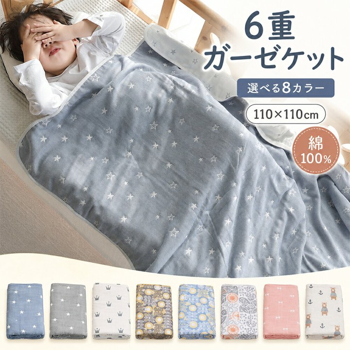
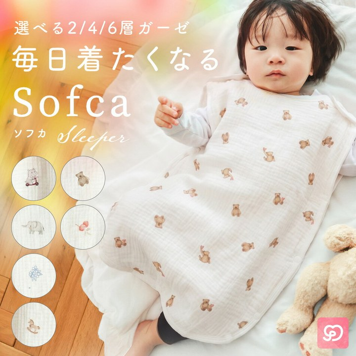
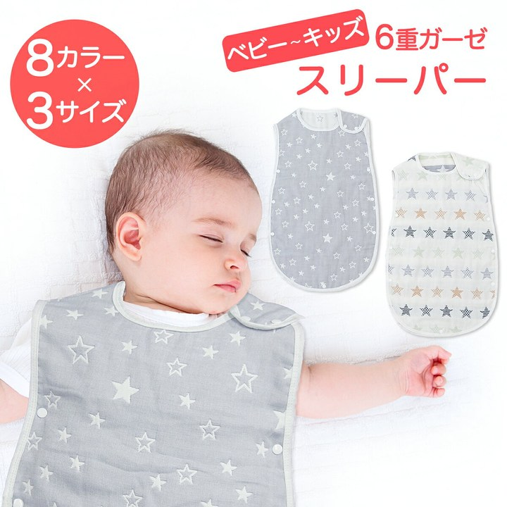
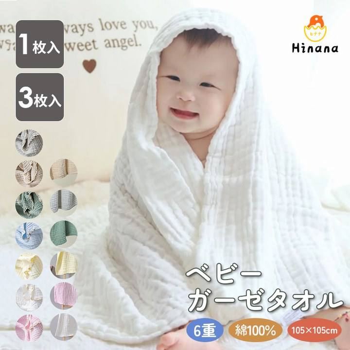
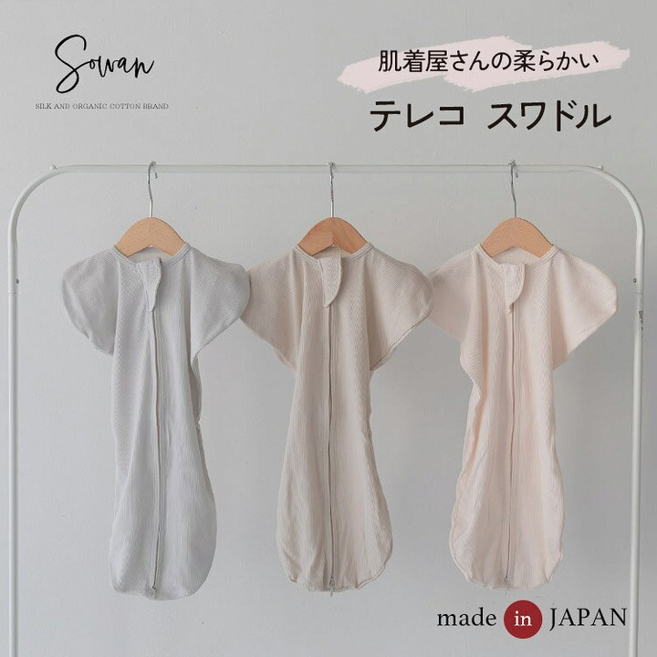
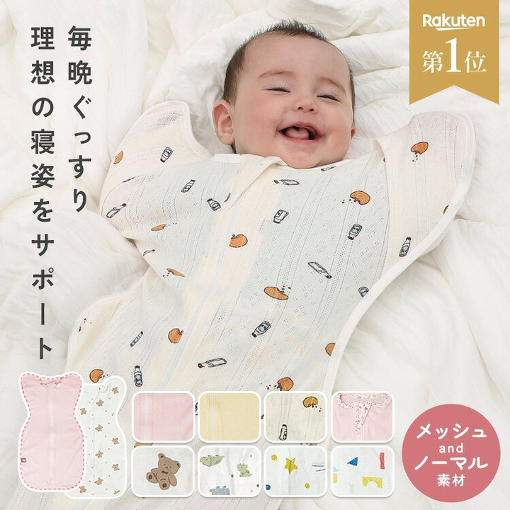
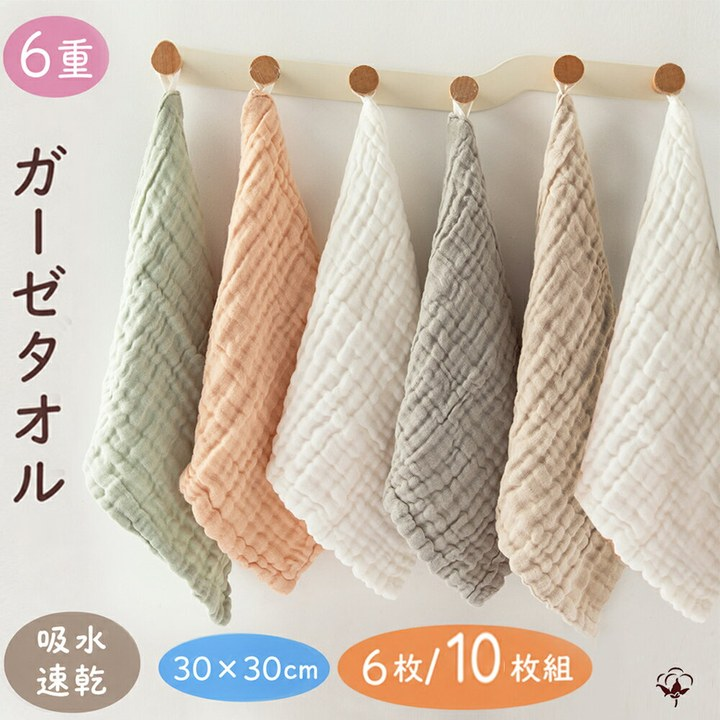
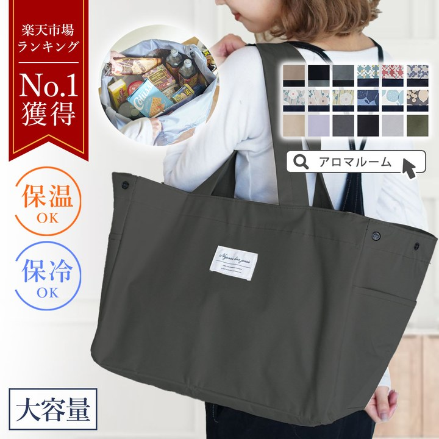

寝かしつけ・夜泣き夜を越えるための道具。夜間対応で消耗している人向け。

一枚で何役もこなす。110cm角の正方形なので、おくるみにも湯上がりにも、ベビーカーの日よけにも回せます。6重ガーゼで通気性をうたっているので、掛けたまま寝かせやすい。 BRILBE ガーゼケット ベビー 綿100% 保育園 お昼寝ケット 110×110cm 6重 ガーゼ 新生児 通気性 おくるみ ベビー バ ¥1,980 楽天市場で見る
起こさずに着せられる。寝たまま前を開いて着せる作りなので、やっと寝たところを起こさずに済みます。2重4重6重から選べて、部屋の温度に合わせられます。 スリーパー ふわふわ ガーゼ 新生児 赤ちゃん 寝たまま着せられる Sofca キッズ ベビー 男の子 女の子 2重 4重 6重 綿 コット ¥1,999 楽天市場で見る
布団を蹴る子に。同じ用途の10件で比べると、最安より400円高いだけでレビューは2倍ついています。新生児から7歳まで着られるので、寝冷えが気になる時期を通して使えます。 【リニューアル】【楽天1位 7冠達成】スリーパー ガーゼ 6重 綿 通年 寝冷え対策 お昼寝 寝汗 ベビー 出産祝い 新生児〜7歳 ¥1,680 楽天市場で見る
風呂上がりの数秒が勝負。正方形なので、角を頭にかけてそのまま包んで拭けます。片手で抱えながら拭くことになるので、四角いほうが扱いやすい。 【対象商品10%OFF】湯上がりタオル バスタオル 赤ちゃん 綿100％ ベビー 正方形 ガーゼタオル 湯上りタオル ベビー くすみカラー ¥1,380 楽天市場で見る
ビクッで起きる子に。手ごと包んでしまえるので、自分の動きで目を覚ます時期を越えやすい。0〜3ヶ月のあいだだけと割り切って使うものです。 肌着屋さんの柔らかい 日本製 スワドル テレコ ベビー 赤ちゃん 出産準備 男の子 女の子 おくるみ 綿100% コットン 新生児 春夏 春 ¥2,810 楽天市場で見る
包みたいけど暑そう。そこを薄手のメッシュで抜いてきた一枚です。モロー反射対策のおくるみは厚手が多いので、季節を選ばず使えるのは助かります。保育士監修。 ＼クーポンで1,791円／ 【保育士監修/高評価★4.6】 マホウノオクルミ おくるみ ガーゼ コットン100% モロー反射対策 薄手 メッ ¥1,990 楽天市場で見る沐浴・ケアお風呂とそのあとのケア。

枚数がないと詰む。よだれと吐き戻しで一日に何枚も替えるので、6枚あると洗濯が追いつきます。ループ付きなので、ベビーベッドの柵や洗面所に掛けておけます。 BRILBE 【ループ付】 6枚組 ガーゼタオル ベビー ガーゼ ハンカチ くすみカラー フェイスタオル 30×30cm 6重ガーゼ ハンド ¥1,680 楽天市場で見るおでかけ外に出るときの装備。片手が空くかどうかで決めている。

片手が塞がらない。同じ用途の10件で最安、それでいてレビューは2,837件あります。レジかごに広げておけるので、抱っこ紐のまま会計して、袋に詰め替える手間が省けます。 レジカゴバッグ エコバッグ 大容量 保冷 折りたたみ 【 レジカゴ 保冷バッグ 】 セルフレジ マチ広 コンパクト 丈夫 大きめ レジかご ¥1,980 楽天市場で見る 鞄の中で迷子にならない。仕切りが3つあるので、オムツ、着替え、自分のものを分けて入れられます。小さめなので、抱っこ紐のときに肩から下げても邪魔になりにくい。 トートバッグ レディース ミニトートバッグ キャンバス 3つ仕切り マザーズバッグ ランチバッグ 小さめ かわいい おしゃれ 布 ミニ シン ¥2,750 楽天市場で見る